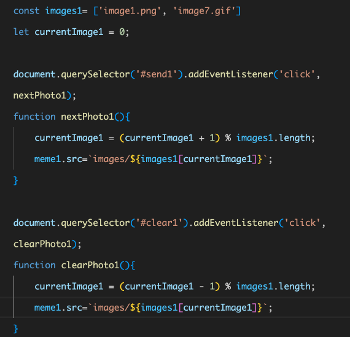
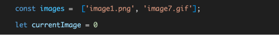
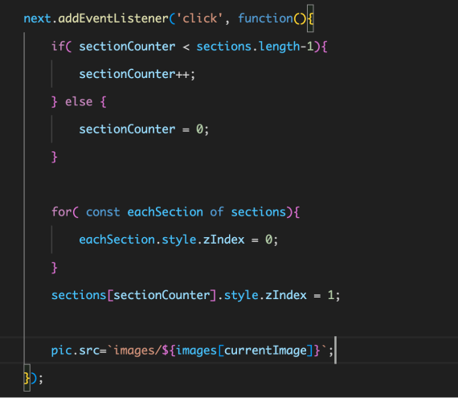
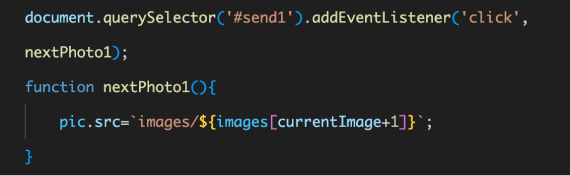

Professor Mead reviewed my code and suggested that I was complicating a simple function. I had a problem with my previous java code where I couldn't get the image of the previous scene to revert when switching scenes with the previous and next buttons. To accomplish this, I made a clear button for each scene. So my Java Script for each button for each scene is shown below:

After reconsidering and organizing my thoughts after exploring the idea, I tried setting up all the images as one item first, and having the current image show up as my default image (which is the same one I was trying to get the individual chat images to revert to with the previous and next buttons earlier):

This way, I just need to add in the previous and next buttons' functions to restore the image to the current image, and then change the src of this image to the image I need in each send button：
 